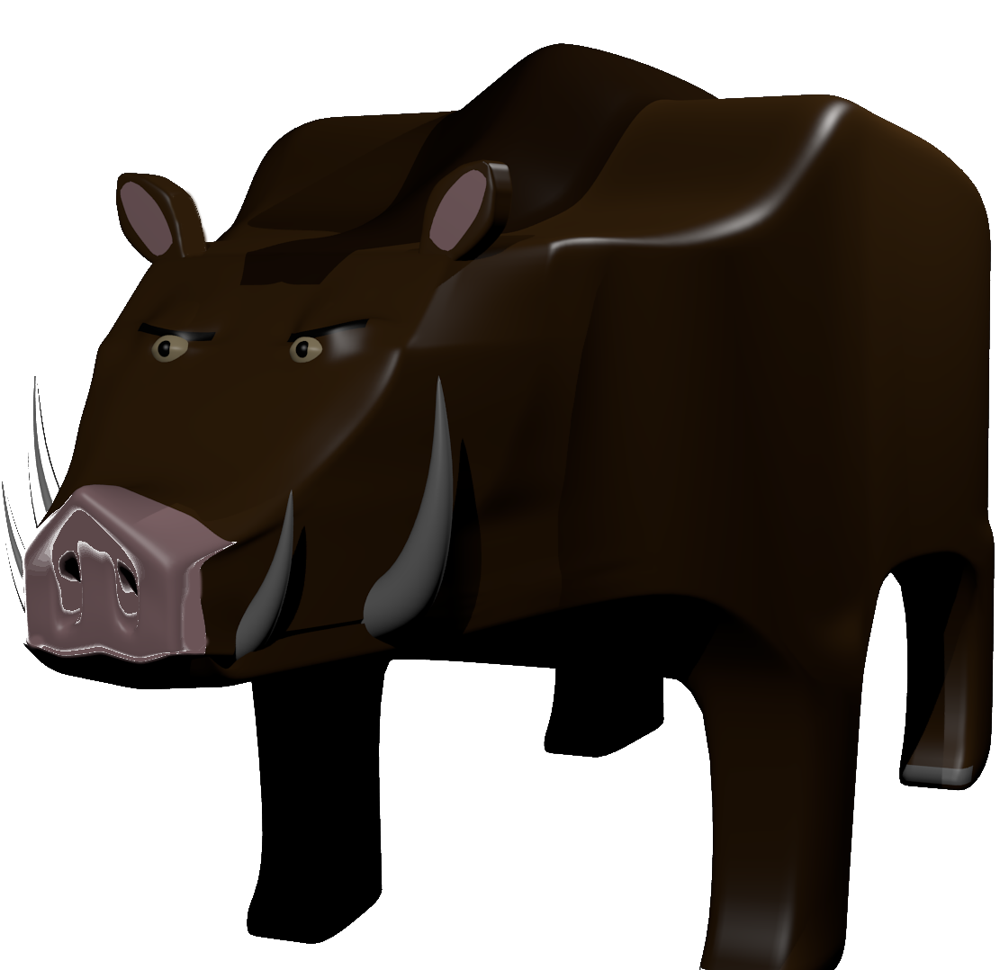

Lancement de la Beta
Dans cette beta vous pourrez décourir : l'interaction avec l'environnement, un système de craft, l'ajout de monstres, un système de combat, un nouveau biome (automne), une refonte graphique du menu et des interfaces et l'ajout de succès et de statistiques. Si vous avez fait partis de nos chanceux alpha testeurs, vous aller alors recevoir un mail avec un lien pour télécharger Aegina sinon cliquez ici, la seule contrepartie que nous demandons est de remplir ce questionnaire
24/04/2016
C'est déjà halloween ?

C'est déjà halloween, est la question que vous avez du vous poser en rentrant dans le jeu aujourd'hui, cepandant rassurez, ce n'est pas le cas. Vous venez juste de decouvrir le biome "Automne" qui viens juste de faire son apparition dans Aegina. Dans ce nouveau biome vous pourez decouvrire de nouveaux éléments comme des champignons, des citrouilles, ... nous vous laissons le plaisir de décrouvrir le reste par vous même.
20/04/2016
Ajout du wiki

Le monde d'Aegina est un monde hostile qui tantera par tous les moyens possibles de subtiliser votre vie. Afin de vous donner une chance de survivre un peu plus de temps dans ce monde que vos prédécesseurs, nous avons ajouter un wiki sur ce site. Ce wiki aura pour but de recenser toutes les ressources, élements, monstres, que vous pourrez trouver en parcourant Aegina. Nous espérons que ce wiki vous sera d'une grande aide.
16/04/2016
Aparition de monstre

Jusqu'a maintenant pour survivre dans Aegina il vous suffisait juste de vous nourrir, de vous hydrater, et surtout eviter de tomber dans les abysses. Nous avons aujourd'hui le malheur de vous annoncer que des phacochères avaient était aperçus dans Aegina. Il paraitrait que ces phacochères sont agressifs, nous vous conseillons donc de les eviter si vous tenez à la vie.
9/04/2016